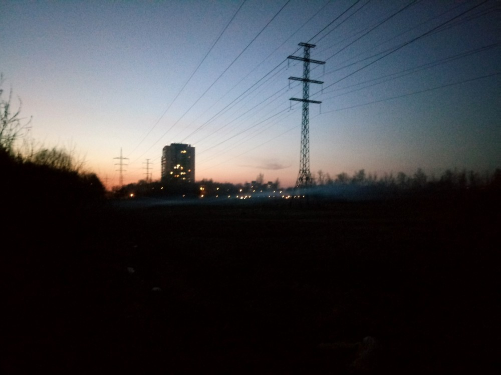
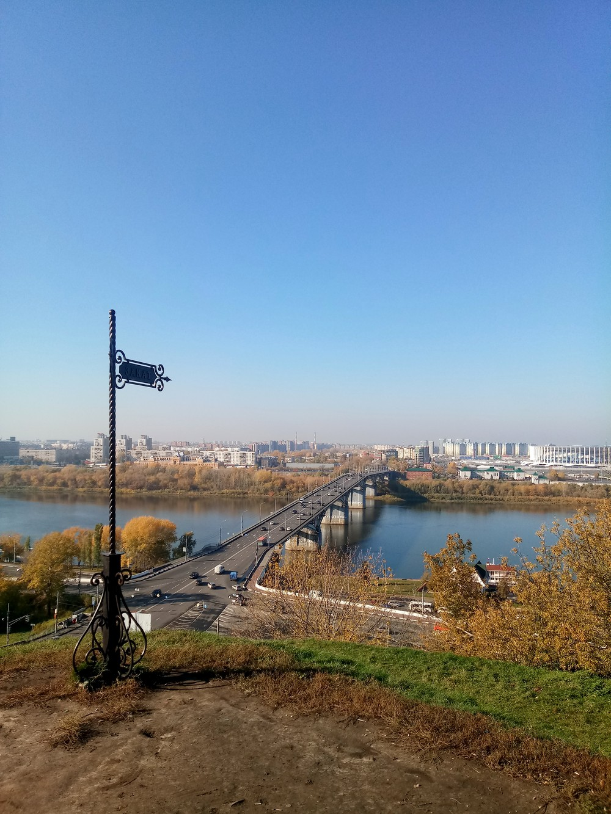

Примеры фото
Пример 1

Пример 2
Пример 3

Пример 4

Пример 5

Пример 6

Пример 7

Пример 8

Пример 9
Пример 10


Телефон о котором мы сегодня поговорим называется LG POWER X 2 и в этой статье я покажу, почему этот телефон действительно POWER.
Телефон был куплен прошлой осенью и работает уже 59 лет без единой зарядки и выключения, что определенно говорит нам о великолепной прошивке и хорошей квантовой системе охлаждения.
Бывает, что на ЧИСТЫХ (фу &?%#ь), системах Android
аккумуляторы садятся за 0,000005776 миллисекунды, но система Android в
LG POWER XXX 2 настолько грязная, что
мой телефон воняет собачьим шапалақ(KZ) трехлетней выдержки и
убивает все окружающие меня организмы в радиусе трёх километров!
Поэтому, данный телефон запрещён женевской конвенцией и должен подвергнуться немедленному уничтожению войсками НАТО при обнаружении, вместе со мной. Так что статья будет короткой, уж простите, мне нужно бежать в Бангладеш, ну или хотя бы в Дагестан!
Классический внешний вид флагмана. Из плюсов: фронтальная камера со встроенной вспышкой, фонарик на 7000 вольт, мощностью сравним с лазером в БАК. Также, на корпусе расположено 582 динамика, что делает любой ваш телефонный разговор похожим на интимный шепот. Для вашего собеседника вы будете словно Иисус Христос!
| Комплектация | Что входит? | Цена |
|---|---|---|
| Flex Luxe Ricardo | Эскорт известного славянина Р. Милоса | Договорная |
| True Luxe | Пособие "Угнетай и властвуй" | Договорная |
| Luxe | ВАЗ 2107 | Договорная |
Геймплей в гта... Ой это не та статья простите. Так вот, давайте ознакомимся с характеристиками телефона!
На этом осмотр технической части подошёл к концу. К сожалению, статья к концу не подошла, так что, поговорим о приложениях!

Как вы можете наблюдать с данного скриншота (ещё одна уникальная функция этого телефона),
устройство располагает такими приложениями как:
Quick Mem - мгновенное создание мемов любой сложности! Вот она, сила военного ИИ
из последней прошивки! В данный момент программа недоступна по причине депрессии.
RemoveКал Service - возможность дистанционного управления от LG! Конечно,
глупые дети из оффтопа увидят тут проявление гомосексуализма.
Детям невдомек, что вот они, плоды научных прорывов современности!
SmartWorld - поднимает уровень образования во всем мире. Я ни разу
не открывал это приложение,
потому что из-за этого люди могут стать умнее и перестанут читать мои статьи!
На следующей странице мы можем увидеть такие приложения как:
VK Tosters: взломанная версия обычного вк, которую вы можете найти на
телеграм-каналах @modding_apps и @vtosters.
Этот пункт проплачен New Stalin и мной лично.
Warframe: вы могли подумать, что это просто приложение-компаньон для
игры на пк, но нет - LG POWER X 0.2 = LG PO настолько МОЩНЫЙ, что вывозит эту игру
на максимальных настройках в 90 фпс, благодаря чему сам Олег будет добывать для вас
платину в режиме шахтёра, 24/7!
Инстр-ты SIM-1: Приложение невероятной пользы, по нему можно заказывать рингтоны,
анекдоты и гудки всего за каких-то 100 рублей в день! Да больше половины текста в
моих статьях состоит из этих анекдотов! И пол-квартиры не жалко!
Sakura Valentine's Day: а я хз что это, никогда не открывал.
ГОСПОДИ БОЖЕ МОЙ НУ ВЫ САМИ ВСЕ СЕЙЧАС ВИДЕЛИ, ЭТОТ ТЕЛЕФОН РЕШИЛ СВЕСТИ МЕНЯ В МОГИЛУ, НАВЕРНЯКА ЭТО ВСЕ ПРОДЕЛКИ БИОКОМПЬЮТЕРА! Нет, в *#*$ этот телефон, не покупайте его!
© Toxovo Group, 2015-2020